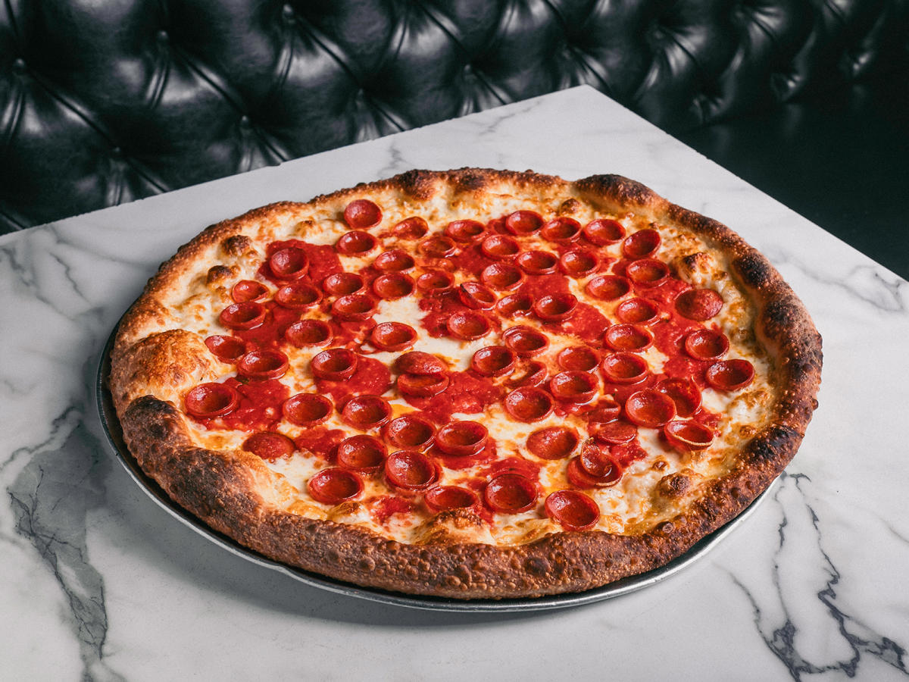

Pizza pie.. The standard American pepperoni pizza is dough topped with sauce, then mozzarella, and finally pepperoni. The pie is baked in an oven.
Where I work we have a dome shaped oven with a stone deck that we keep between 540-550 degrees F.
A pizza on a 16 inch 18 ounce dough takes 6-8 minutes to cook depending upon where in the over we place it.